Contents
% Test sensitivity calculation with respect to local/global initial % conditions using LRank and the alphapinene problem.
Alpha Piene with 2 experiments (to test local initial conditions)
clear; alphaPinene_2exps; % Global initial conditions inputs.PEsol.id_global_theta_y0 = char('y1','y2','y3'); inputs.PEsol.global_theta_y0_guess = [90 2 3]; inputs.PEsol.global_theta_y0_max = [100 10 10]; inputs.PEsol.global_theta_y0_min = [80 0 0]; % local initial conditions: inputs.PEsol.id_local_theta_y0{1} = char('y4'); inputs.PEsol.local_theta_y0_guess{1} = [4]; inputs.PEsol.local_theta_y0_max{1} = [10]; inputs.PEsol.local_theta_y0_min{1} = [0]; inputs.PEsol.id_local_theta_y0{2} = char('y5'); inputs.PEsol.local_theta_y0_guess{2} = [5]; inputs.PEsol.local_theta_y0_max{2} = [10]; inputs.PEsol.local_theta_y0_min{2} = [0];
Test for different solvers:
MATLAB model with sensmat:
inputs.model.input_model_type='charmodelM'; inputs.ivpsol.ivpsolver='ode15s'; inputs.ivpsol.senssolver='sensmat'; AMIGO_Prep(inputs); AMIGO_LRank(inputs);
*********************************** * AMIGO, Copyright @CSIC * * AMIGO2_R1 [July 2013] * *********************************** *Date: 14-Jul-2014 ------>Pre processing....this may take a few seconds. ------>Checking inputs.... Warning: AMIGO_check_model: You did not specify inputs.model.exe_type, standard will be assumed -->Jacobian or sensitivity calculation detected. Checking the Symbolic Toolbox. ------>Constructing the Jacobian.... 0 algebraic and 5 differential equations are found. ------> Generating Matlab file... D:\AMIGO_SVN\trunk\AMIGO_R2012_cvodes\Results\test\fcn_alphap_2exps.m ------>Files generated.... *********************************** * AMIGO, Copyright @CSIC * * AMIGO2_R1 [July 2013] * *********************************** *Date: 14-Jul-2014 ------>Pre processing....this may take a few seconds. ------>Checking inputs.... Warning: AMIGO_check_model: You did not specify inputs.model.exe_type, standard will be assumed Warning: Directory already exists. ------>Performing local sensitivity analysis and ranking of unknowns ------------------------------- Local sensitivity problem related active settings ------------------------------- senssolver: sensmat ivp_RelTol: 1e-007 ivp_AbsTol: 1e-007 sensolver is changed to fdens5Backward Differentiation (BDF): on modified sens_sys.m is used (ode15s based). For further info type 'help sens_sys'. ------------------------------- Initial value problem related active settings ------------------------------- ivpsolver: ode15s RelTol: 1e-007 AbsTol: 1e-007 Backward Differentiation (BDF): on MATLAB model file: fcn_alphap_2exps Elapsed time is 1.753791 seconds. ------------------------------- Local sensitivity problem related active settings ------------------------------- senssolver: sensmat ivp_RelTol: 1e-007 ivp_AbsTol: 1e-007 sensolver is changed to fdens5Backward Differentiation (BDF): on modified sens_sys.m is used (ode15s based). For further info type 'help sens_sys'. Elapsed time is 1.668738 seconds. ------> RANKING for experiment: 1 ------>ABSOLUTE Ranking of model unknowns: par value d_msqr d_mabs d_mean d_max d_min ____________________________________________________________________________________________ p2 2.9600e-005 3.3993e+004 1.6195e+005 -1.7478e-003 5.3448e+005 -5.6297e+005 p1 5.9300e-005 3.0215e+004 1.2702e+005 4.5310e-004 4.8565e+005 -3.7194e+005 p3 2.0500e-005 6.5301e+003 2.2467e+004 1.3837e-003 1.6227e+005 -1.3256e+005 p5 4.0000e-005 4.0493e+003 1.3190e+004 4.4694e-004 6.8270e+004 -1.0122e+005 p4 2.7500e-004 1.3984e+003 5.7181e+003 1.4084e-004 2.0625e+004 -1.7583e+004 ____________________________________________________________________________________________ ____________________________________________________________________________________________ y1 1.0000e+002 1.2693e-001 7.3988e-001 7.3988e-001 1.0000e+000 0.0000e+000 y4 0.0000e+000 5.5627e-002 1.5453e-001 1.5453e-001 1.0000e+000 -6.2829e-010 y3 0.0000e+000 2.6008e-002 8.8592e-002 8.8592e-002 1.0000e+000 -2.4545e-007 y2 0.0000e+000 7.6072e-003 1.6995e-002 1.6995e-002 1.0000e+000 -2.8242e-008 ____________________________________________________________________________________________ ------>RELATIVE Ranking of model unknowns: par value rd_msqr rd_mabs rd_mean rd_max rd_min ____________________________________________________________________________________________ ____________________________________________________________________________________________ p1 5.9300e-005 9.1987e-002 4.0085e-001 -1.3527e-001 4.8565e+005 -3.7194e+005 p2 2.9600e-005 7.8179e-002 3.9874e-001 1.9801e-001 5.3448e+005 -5.6297e+005 p4 2.7500e-004 6.2798e-002 2.5655e-001 -6.4208e-002 2.0625e+004 -1.7583e+004 p5 4.0000e-005 2.6446e-002 7.7183e-002 4.1505e-002 6.8270e+004 -1.0122e+005 p3 2.0500e-005 1.9340e-002 6.8618e-002 1.6358e-002 1.6227e+005 -1.3256e+005 ____________________________________________________________________________________________ ____________________________________________________________________________________________ y1 1.0000e+002 1.2693e-001 7.3988e-001 7.3988e-001 1.0000e+000 0.0000e+000 y4 0.0000e+000 5.5627e-002 1.5453e-001 1.5453e-001 1.0000e+000 -6.2829e-010 y3 0.0000e+000 2.6008e-002 8.8592e-002 8.8592e-002 1.0000e+000 -2.4545e-007 y2 0.0000e+000 7.6072e-003 1.6995e-002 1.6995e-002 1.0000e+000 -2.8242e-008 ____________________________________________________________________________________________ ------> RANKING for experiment: 2 ------>ABSOLUTE Ranking of model unknowns: par value d_msqr d_mabs d_mean d_max d_min ____________________________________________________________________________________________ p2 2.9600e-005 3.3993e+004 1.6195e+005 5.7053e-004 5.3448e+005 -5.6297e+005 p1 5.9300e-005 3.0215e+004 1.2702e+005 -6.1241e-005 4.8565e+005 -3.7194e+005 p3 2.0500e-005 7.1592e+003 2.4445e+004 -9.2562e-004 1.7982e+005 -1.4653e+005 p5 4.0000e-005 5.0873e+003 1.7966e+004 2.6029e-006 7.9508e+004 -1.2095e+005 p4 2.7500e-004 1.5279e+003 6.2267e+003 1.5509e-005 2.2896e+004 -1.9107e+004 ____________________________________________________________________________________________ ____________________________________________________________________________________________ y1 1.0000e+002 1.2790e-001 7.7959e-001 7.7959e-001 1.0000e+000 0.0000e+000 y5 0.0000e+000 2.9579e-002 9.8653e-002 9.8653e-002 1.0000e+000 -1.6587e-008 y3 0.0000e+000 2.6928e-002 1.0476e-001 1.0476e-001 1.0000e+000 -2.0566e-007 y2 0.0000e+000 7.6072e-003 1.6995e-002 1.6995e-002 1.0000e+000 -1.0932e-007 ____________________________________________________________________________________________ ------>RELATIVE Ranking of model unknowns: par value rd_msqr rd_mabs rd_mean rd_max rd_min ____________________________________________________________________________________________ ____________________________________________________________________________________________ p1 5.9300e-005 9.1448e-002 4.0646e-001 -1.4087e-001 4.8565e+005 -3.7194e+005 p2 2.9600e-005 7.9978e-002 4.3566e-001 2.3492e-001 5.3448e+005 -5.6297e+005 p3 2.0500e-005 6.7731e-002 2.1441e-001 1.6634e-001 1.7982e+005 -1.4653e+005 p4 2.7500e-004 6.5184e-002 2.8911e-001 -1.7209e-001 2.2896e+004 -1.9107e+004 p5 4.0000e-005 3.1408e-002 1.1276e-001 7.2370e-002 7.9508e+004 -1.2095e+005 ____________________________________________________________________________________________ ____________________________________________________________________________________________ y1 1.0000e+002 1.2790e-001 7.7959e-001 7.7959e-001 1.0000e+000 0.0000e+000 y5 0.0000e+000 2.9579e-002 9.8653e-002 9.8653e-002 1.0000e+000 -1.6587e-008 y3 0.0000e+000 2.6928e-002 1.0476e-001 1.0476e-001 1.0000e+000 -2.0566e-007 y2 0.0000e+000 7.6072e-003 1.6995e-002 1.6995e-002 1.0000e+000 -1.0932e-007 ____________________________________________________________________________________________ ------> OVERALL RANKING ------>ABSOLUTE Ranking of GLOBAL model unknowns: par value d_msqr d_mabs d_mean d_max d_min ____________________________________________________________________________________________ ____________________________________________________________________________________________ p2 2.9600e-005 3.3993e+004 1.6195e+005 -5.8863e-004 5.3448e+005 -5.6297e+005 p1 5.9300e-005 3.0215e+004 1.2702e+005 1.9593e-004 4.8565e+005 -3.7194e+005 p3 2.0500e-005 6.8447e+003 2.3456e+004 2.2905e-004 1.7982e+005 -1.4653e+005 p5 4.0000e-005 4.5683e+003 1.5578e+004 2.2477e-004 7.9508e+004 -1.2095e+005 p4 2.7500e-004 1.4632e+003 5.9724e+003 7.8175e-005 2.2896e+004 -1.9107e+004 ____________________________________________________________________________________________ ____________________________________________________________________________________________ y2 0.0000e+000 6.6667e-002 2.0000e-001 2.0000e-001 1.0000e+000 -8.2463e-008 y3 0.0000e+000 5.3084e-002 2.0000e-001 2.0000e-001 1.0000e+000 -2.4545e-007 y1 1.0000e+002 4.8845e-002 2.0000e-001 2.0000e-001 1.0000e+000 0.0000e+000 ____________________________________________________________________________________________ ------>RELATIVE Ranking of GLOBAL model unknowns: par value rd_msqr rd_mabs rd_mean rd_max rd_min ____________________________________________________________________________________________ p1 5.9300e-005 9.1718e-002 4.0366e-001 -1.3807e-001 4.8565e+005 -3.7194e+005 p2 2.9600e-005 7.9079e-002 4.1720e-001 2.1647e-001 5.3448e+005 -5.6297e+005 p4 2.7500e-004 6.3991e-002 2.7283e-001 -1.1815e-001 2.2896e+004 -1.9107e+004 p3 2.0500e-005 4.3535e-002 1.4151e-001 9.1350e-002 1.7982e+005 -1.4653e+005 p5 4.0000e-005 2.8927e-002 9.4971e-002 5.6938e-002 7.9508e+004 -1.2095e+005 ____________________________________________________________________________________________ ____________________________________________________________________________________________ y1 1.0000e+002 1.2742e-001 7.5974e-001 7.5974e-001 1.0000e+000 0.0000e+000 y3 0.0000e+000 2.6468e-002 9.6675e-002 9.6675e-002 1.0000e+000 -2.4545e-007 y2 0.0000e+000 7.6072e-003 1.6995e-002 1.6995e-002 1.0000e+000 -1.0932e-007 ____________________________________________________________________________________________ > 100.00% of successful simulationn > NaN% of successful sensitivity calculations ------>Plotting results.... ------>Results (report and struct_results.mat) and plots were kept in the directory: Results\test\LRank_alphap_2exps_run1
 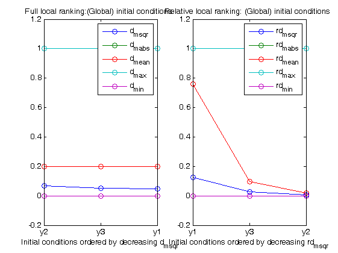
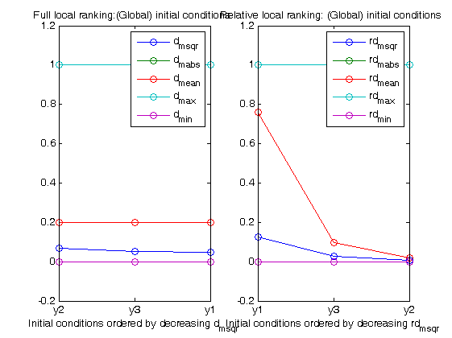 


Fortran model with radau5/odessa
inputs.model.input_model_type='charmodelF'; inputs.ivpsol.ivpsolver='radau5'; inputs.ivpsol.senssolver='odessa'; AMIGO_Prep(inputs); AMIGO_LRank(inputs);
***********************************
* AMIGO, Copyright @CSIC *
* AMIGO2_R1 [July 2013] *
***********************************
*Date: 14-Jul-2014
------>Pre processing....this may take a few seconds.
------>Checking inputs....
Warning: AMIGO_check_model: You did not specify inputs.model.exe_type, standard will be assumed
-->Jacobian or sensitivity calculation detected. Checking the Symbolic Toolbox.
------>Constructing the Jacobian....
0 algebraic and 5 differential equations are found.
------> Generating fortran code ...
------> Mexing files....
In file D:\AMIGO_SVN\trunk\AMIGO_R2012_cvodes\Kernel\IVP_solvers\radau5\cradau5g.f:86
CALL FCNCRADAU5(NLHS,PL,NRHS,PR,A3,A5,A7,A9,A10,A13,A15,A17,
1
In file D:\AMIGO_SVN\trunk\AMIGO_R2012_cvodes\Kernel\IVP_solvers\radau5\cradau5g.f:92
SUBROUTINE FCNCRADAU5(NLHS,PL,NRHS,PR,A3,A5,A7,A9,A10,A13,A15,
2
Warning (155): Inconsistent types (INTEGER(4)/REAL(8)) in actual argument lists at (1) and (2)
In file D:\AMIGO_SVN\trunk\AMIGO_R2012_cvodes\Kernel\IVP_solvers\odessa\codessag.f:82
CALL FCNCODESSA(NLHS,PL,NRHS,PR,A3,A4,A12,A13,A15,A18,A20,
1
In file D:\AMIGO_SVN\trunk\AMIGO_R2012_cvodes\Kernel\IVP_solvers\odessa\codessag.f:88
SUBROUTINE FCNCODESSA(NLHS,PL,NRHS,PR,A3,A4,A12,A13,A15,A18,A20,
2
Warning (155): Inconsistent types (INTEGER(4)/REAL(8)) in actual argument lists at (1) and (2)
------>Files generated....
***********************************
* AMIGO, Copyright @CSIC *
* AMIGO2_R1 [July 2013] *
***********************************
*Date: 14-Jul-2014
------>Pre processing....this may take a few seconds.
------>Checking inputs....
Warning: AMIGO_check_model: You did not specify inputs.model.exe_type, standard will be assumed
Warning: Directory already exists.
------>Performing local sensitivity analysis and ranking of unknowns
-------------------------------
Local sensitivity problem related active settings
-------------------------------
senssolver: odessa
ivp_RelTol: 1e-007
ivp_AbsTol: 1e-007
sensmex: odessag_alphap_2exps
Elapsed time is 0.016073 seconds.
Elapsed time is 0.005692 seconds.
------> RANKING for experiment: 1
------>ABSOLUTE Ranking of model unknowns:
par value d_msqr d_mabs d_mean d_max d_min
____________________________________________________________________________________________
p2 2.9600e-005 3.3993e+004 1.6195e+005 7.6845e-006 5.3448e+005 -5.6297e+005
p1 5.9300e-005 3.0215e+004 1.2702e+005 9.3205e-006 4.8565e+005 -3.7194e+005
p3 2.0500e-005 6.5301e+003 2.2467e+004 6.1721e-006 1.6227e+005 -1.3256e+005
p5 4.0000e-005 4.0493e+003 1.3190e+004 -1.8095e-005 6.8270e+004 -1.0122e+005
p4 2.7500e-004 1.3984e+003 5.7181e+003 6.5111e-006 2.0625e+004 -1.7583e+004
____________________________________________________________________________________________
____________________________________________________________________________________________
y1 1.0000e+002 1.2693e-001 7.3988e-001 7.3988e-001 1.0000e+000 0.0000e+000
y4 0.0000e+000 5.5627e-002 1.5453e-001 1.5453e-001 1.0000e+000 0.0000e+000
y3 0.0000e+000 2.6008e-002 8.8592e-002 8.8592e-002 1.0000e+000 0.0000e+000
y2 0.0000e+000 7.6072e-003 1.6995e-002 1.6995e-002 1.0000e+000 0.0000e+000
____________________________________________________________________________________________
------>RELATIVE Ranking of model unknowns:
par value rd_msqr rd_mabs rd_mean rd_max rd_min
____________________________________________________________________________________________
____________________________________________________________________________________________
p1 5.9300e-005 9.1987e-002 4.0085e-001 -1.3527e-001 4.8565e+005 -3.7194e+005
p2 2.9600e-005 7.8179e-002 3.9874e-001 1.9801e-001 5.3448e+005 -5.6297e+005
p4 2.7500e-004 6.2798e-002 2.5655e-001 -6.4208e-002 2.0625e+004 -1.7583e+004
p5 4.0000e-005 2.6446e-002 7.7183e-002 4.1505e-002 6.8270e+004 -1.0122e+005
p3 2.0500e-005 1.9340e-002 6.8618e-002 1.6358e-002 1.6227e+005 -1.3256e+005
____________________________________________________________________________________________
____________________________________________________________________________________________
y1 1.0000e+002 1.2693e-001 7.3988e-001 7.3988e-001 1.0000e+000 0.0000e+000
y4 0.0000e+000 5.5627e-002 1.5453e-001 1.5453e-001 1.0000e+000 0.0000e+000
y3 0.0000e+000 2.6008e-002 8.8592e-002 8.8592e-002 1.0000e+000 0.0000e+000
y2 0.0000e+000 7.6072e-003 1.6995e-002 1.6995e-002 1.0000e+000 0.0000e+000
____________________________________________________________________________________________
------> RANKING for experiment: 2
------>ABSOLUTE Ranking of model unknowns:
par value d_msqr d_mabs d_mean d_max d_min
____________________________________________________________________________________________
p2 2.9600e-005 3.3993e+004 1.6195e+005 3.2778e-004 5.3448e+005 -5.6297e+005
p1 5.9300e-005 3.0215e+004 1.2702e+005 1.8798e-004 4.8565e+005 -3.7194e+005
p3 2.0500e-005 7.1592e+003 2.4445e+004 -1.4243e-005 1.7982e+005 -1.4653e+005
p5 4.0000e-005 5.0873e+003 1.7966e+004 -7.0971e-006 7.9508e+004 -1.2095e+005
p4 2.7500e-004 1.5279e+003 6.2267e+003 8.1255e-007 2.2896e+004 -1.9107e+004
____________________________________________________________________________________________
____________________________________________________________________________________________
y1 1.0000e+002 1.2790e-001 7.7959e-001 7.7959e-001 1.0000e+000 0.0000e+000
y5 0.0000e+000 2.9579e-002 9.8653e-002 9.8653e-002 1.0000e+000 0.0000e+000
y3 0.0000e+000 2.6928e-002 1.0476e-001 1.0476e-001 1.0000e+000 0.0000e+000
y2 0.0000e+000 7.6072e-003 1.6995e-002 1.6995e-002 1.0000e+000 0.0000e+000
____________________________________________________________________________________________
------>RELATIVE Ranking of model unknowns:
par value rd_msqr rd_mabs rd_mean rd_max rd_min
____________________________________________________________________________________________
____________________________________________________________________________________________
p1 5.9300e-005 9.1448e-002 4.0646e-001 -1.4087e-001 4.8565e+005 -3.7194e+005
p2 2.9600e-005 7.9978e-002 4.3566e-001 2.3492e-001 5.3448e+005 -5.6297e+005
p3 2.0500e-005 6.7731e-002 2.1441e-001 1.6634e-001 1.7982e+005 -1.4653e+005
p4 2.7500e-004 6.5184e-002 2.8911e-001 -1.7209e-001 2.2896e+004 -1.9107e+004
p5 4.0000e-005 3.1408e-002 1.1276e-001 7.2370e-002 7.9508e+004 -1.2095e+005
____________________________________________________________________________________________
____________________________________________________________________________________________
y1 1.0000e+002 1.2790e-001 7.7959e-001 7.7959e-001 1.0000e+000 0.0000e+000
y5 0.0000e+000 2.9579e-002 9.8653e-002 9.8653e-002 1.0000e+000 0.0000e+000
y3 0.0000e+000 2.6928e-002 1.0476e-001 1.0476e-001 1.0000e+000 0.0000e+000
y2 0.0000e+000 7.6072e-003 1.6995e-002 1.6995e-002 1.0000e+000 0.0000e+000
____________________________________________________________________________________________
------> OVERALL RANKING
------>ABSOLUTE Ranking of GLOBAL model unknowns:
par value d_msqr d_mabs d_mean d_max d_min
____________________________________________________________________________________________
____________________________________________________________________________________________
p2 2.9600e-005 3.3993e+004 1.6195e+005 1.6773e-004 5.3448e+005 -5.6297e+005
p1 5.9300e-005 3.0215e+004 1.2702e+005 9.8652e-005 4.8565e+005 -3.7194e+005
p3 2.0500e-005 6.8447e+003 2.3456e+004 -4.0353e-006 1.7982e+005 -1.4653e+005
p5 4.0000e-005 4.5683e+003 1.5578e+004 -1.2596e-005 7.9508e+004 -1.2095e+005
p4 2.7500e-004 1.4632e+003 5.9724e+003 3.6618e-006 2.2896e+004 -1.9107e+004
____________________________________________________________________________________________
____________________________________________________________________________________________
y2 0.0000e+000 6.6667e-002 2.0000e-001 2.0000e-001 1.0000e+000 0.0000e+000
y3 0.0000e+000 5.3084e-002 2.0000e-001 2.0000e-001 1.0000e+000 0.0000e+000
y1 1.0000e+002 4.8845e-002 2.0000e-001 2.0000e-001 1.0000e+000 0.0000e+000
____________________________________________________________________________________________
------>RELATIVE Ranking of GLOBAL model unknowns:
par value rd_msqr rd_mabs rd_mean rd_max rd_min
____________________________________________________________________________________________
p1 5.9300e-005 9.1718e-002 4.0366e-001 -1.3807e-001 4.8565e+005 -3.7194e+005
p2 2.9600e-005 7.9079e-002 4.1720e-001 2.1647e-001 5.3448e+005 -5.6297e+005
p4 2.7500e-004 6.3991e-002 2.7283e-001 -1.1815e-001 2.2896e+004 -1.9107e+004
p3 2.0500e-005 4.3535e-002 1.4151e-001 9.1350e-002 1.7982e+005 -1.4653e+005
p5 4.0000e-005 2.8927e-002 9.4970e-002 5.6938e-002 7.9508e+004 -1.2095e+005
____________________________________________________________________________________________
____________________________________________________________________________________________
y1 1.0000e+002 1.2742e-001 7.5974e-001 7.5974e-001 1.0000e+000 0.0000e+000
y3 0.0000e+000 2.6468e-002 9.6675e-002 9.6675e-002 1.0000e+000 0.0000e+000
y2 0.0000e+000 7.6072e-003 1.6995e-002 1.6995e-002 1.0000e+000 0.0000e+000
____________________________________________________________________________________________
> 100.00% of successful simulationn
> 100.00% of successful sensitivity calculations
------>Plotting results....
------>Results (report and struct_results.mat) and plots were kept in the directory:
Results\test\LRank_alphap_2exps_run1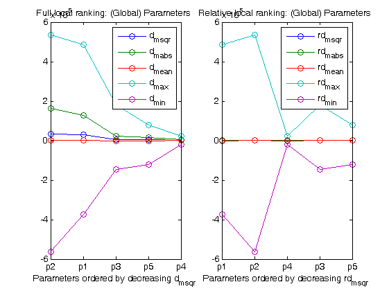 
 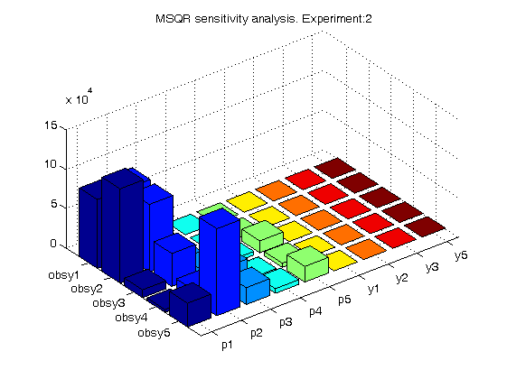
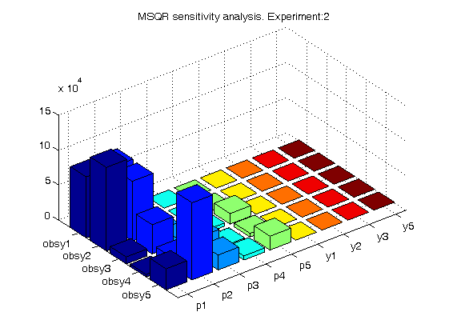  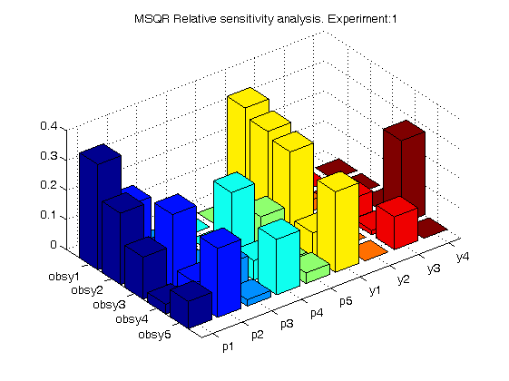
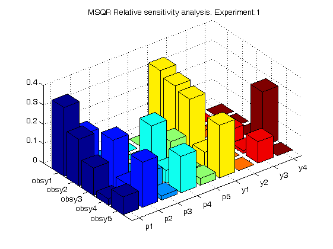  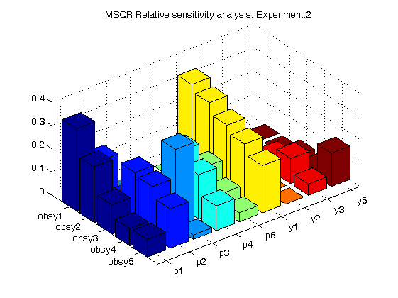 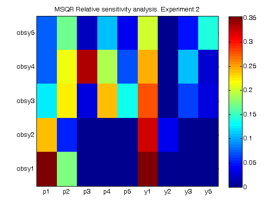
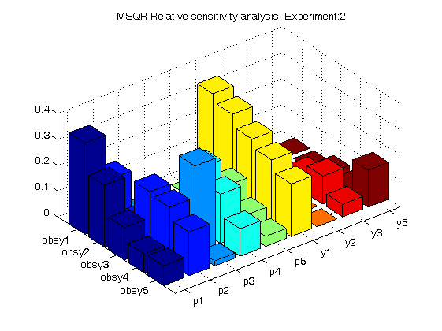 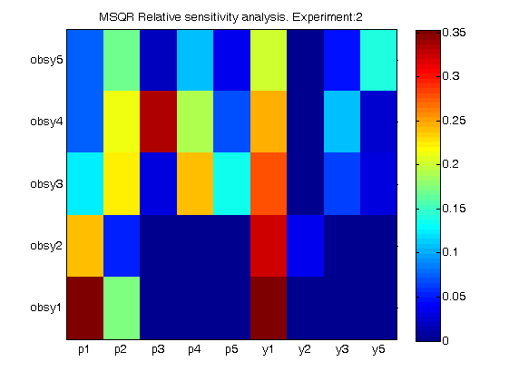 C-model with CVODES
inputs.model.input_model_type='charmodelC'; inputs.ivpsol.ivpsolver='cvodes'; inputs.ivpsol.senssolver='cvodes'; AMIGO_Prep(inputs); AMIGO_LRank(inputs);
***********************************
* AMIGO, Copyright @CSIC *
* AMIGO2_R1 [July 2013] *
***********************************
*Date: 14-Jul-2014
------>Pre processing....this may take a few seconds.
------>Checking inputs....
Warning: AMIGO_check_model: You did not specify inputs.model.exe_type, standard will be assumed
-->Jacobian or sensitivity calculation detected. Checking the Symbolic Toolbox.
------>Constructing the Jacobian....
0 algebraic and 5 differential equations are found.
------> Generating C code ...
------> Mexing files....
-> Default options filename found in C:\Users\Gabora\AppData\Roaming\MathWorks\MATLAB\R2011a
----------------------------------------------------------------
-> Options file = C:\Users\Gabora\AppData\Roaming\MathWorks\MATLAB\R2011a\mexopts.bat
MATLAB = D:\MATLAB_R2011a
-> COMPILER = cl
-> Compiler flags:
COMPFLAGS = /c /Zp8 /GR /W3 /EHs /D_CRT_SECURE_NO_DEPRECATE /D_SCL_SECURE_NO_DEPRECATE /D_SECURE_SCL=0 /DMATLAB_MEX_FILE /nologo /MD
OPTIMFLAGS = /O2 /Oy- /DNDEBUG
DEBUGFLAGS = /Z7
arguments = -ID:\AMIGO_SVN\trunk\AMIGO_R2012_cvodes\Kernel\IVP_solvers\cvodes\C_src4Amigo\include\include_amigo -ID:\AMIGO_SVN\trunk\AMIGO_R2012_cvodes\Kernel\IVP_solvers\cvodes\C_src4Amigo\include\include_cvodes
Name switch = /Fo
-> Pre-linking commands =
-> LINKER = link
-> Link directives:
LINKFLAGS = /dll /export:mexFunction /LIBPATH:"D:\MATLAB_R2011a\extern\lib\win32\microsoft" libmx.lib libmex.lib libmat.lib /MACHINE:X86 kernel32.lib user32.lib gdi32.lib winspool.lib comdlg32.lib advapi32.lib shell32.lib ole32.lib oleaut32.lib uuid.lib odbc32.lib odbccp32.lib /nologo /manifest /incremental:NO /implib:"C:\Users\Gabora\AppData\Local\Temp\mex_OR4Xq9\templib.x" /MAP:"D:\AMIGO_SVN\trunk\AMIGO_R2012_cvodes\Results\test\cvodesg_alphap_2exps.mexw32.map"
LINKDEBUGFLAGS = /debug /PDB:"D:\AMIGO_SVN\trunk\AMIGO_R2012_cvodes\Results\test\cvodesg_alphap_2exps.mexw32.pdb"
LINKFLAGSPOST =
Name directive = /out:"D:\AMIGO_SVN\trunk\AMIGO_R2012_cvodes\Results\test\cvodesg_alphap_2exps.mexw32"
File link directive =
Lib. link directive =
Rsp file indicator = @
-> Resource Compiler = rc /fo "D:\AMIGO_SVN\trunk\AMIGO_R2012_cvodes\Results\test\mexversion.res"
-> Resource Linker =
----------------------------------------------------------------
--> cl -ID:\AMIGO_SVN\trunk\AMIGO_R2012_cvodes\Kernel\IVP_solvers\cvodes\C_src4Amigo\include\include_amigo -ID:\AMIGO_SVN\trunk\AMIGO_R2012_cvodes\Kernel\IVP_solvers\cvodes\C_src4Amigo\include\include_cvodes /c /Zp8 /GR /W3 /EHs /D_CRT_SECURE_NO_DEPRECATE /D_SCL_SECURE_NO_DEPRECATE /D_SECURE_SCL=0 /DMATLAB_MEX_FILE /nologo /MD /FoC:\Users\Gabora\AppData\Local\Temp\mex_OR4Xq9\amigoRHS.obj -ID:\MATLAB_R2011a\extern\include -ID:\MATLAB_R2011a\simulink\include /Z7 -DMX_COMPAT_32 D:\AMIGO_SVN\trunk\AMIGO_R2012_cvodes\Results\test\amigoRHS.c
amigoRHS.c
--> cl -ID:\AMIGO_SVN\trunk\AMIGO_R2012_cvodes\Kernel\IVP_solvers\cvodes\C_src4Amigo\include\include_amigo -ID:\AMIGO_SVN\trunk\AMIGO_R2012_cvodes\Kernel\IVP_solvers\cvodes\C_src4Amigo\include\include_cvodes /c /Zp8 /GR /W3 /EHs /D_CRT_SECURE_NO_DEPRECATE /D_SCL_SECURE_NO_DEPRECATE /D_SECURE_SCL=0 /DMATLAB_MEX_FILE /nologo /MD /FoC:\Users\Gabora\AppData\Local\Temp\mex_OR4Xq9\AMIGO_model.obj -ID:\MATLAB_R2011a\extern\include -ID:\MATLAB_R2011a\simulink\include /Z7 -DMX_COMPAT_32 D:\AMIGO_SVN\trunk\AMIGO_R2012_cvodes\Kernel\IVP_solvers\cvodes\C_src4Amigo\src\src_amigo\AMIGO_model.c
AMIGO_model.c
--> cl -ID:\AMIGO_SVN\trunk\AMIGO_R2012_cvodes\Kernel\IVP_solvers\cvodes\C_src4Amigo\include\include_amigo -ID:\AMIGO_SVN\trunk\AMIGO_R2012_cvodes\Kernel\IVP_solvers\cvodes\C_src4Amigo\include\include_cvodes /c /Zp8 /GR /W3 /EHs /D_CRT_SECURE_NO_DEPRECATE /D_SCL_SECURE_NO_DEPRECATE /D_SECURE_SCL=0 /DMATLAB_MEX_FILE /nologo /MD /FoC:\Users\Gabora\AppData\Local\Temp\mex_OR4Xq9\simulate_amigo_model.obj -ID:\MATLAB_R2011a\extern\include -ID:\MATLAB_R2011a\simulink\include /Z7 -DMX_COMPAT_32 D:\AMIGO_SVN\trunk\AMIGO_R2012_cvodes\Kernel\IVP_solvers\cvodes\C_src4Amigo\src\src_amigo\simulate_amigo_model.c
simulate_amigo_model.c
--> cl -ID:\AMIGO_SVN\trunk\AMIGO_R2012_cvodes\Kernel\IVP_solvers\cvodes\C_src4Amigo\include\include_amigo -ID:\AMIGO_SVN\trunk\AMIGO_R2012_cvodes\Kernel\IVP_solvers\cvodes\C_src4Amigo\include\include_cvodes /c /Zp8 /GR /W3 /EHs /D_CRT_SECURE_NO_DEPRECATE /D_SCL_SECURE_NO_DEPRECATE /D_SECURE_SCL=0 /DMATLAB_MEX_FILE /nologo /MD /FoC:\Users\Gabora\AppData\Local\Temp\mex_OR4Xq9\interface_with_matlab.obj -ID:\MATLAB_R2011a\extern\include -ID:\MATLAB_R2011a\simulink\include /Z7 -DMX_COMPAT_32 D:\AMIGO_SVN\trunk\AMIGO_R2012_cvodes\Kernel\IVP_solvers\cvodes\C_src4Amigo\src\src_interface\interface_with_matlab.c
interface_with_matlab.c
D:\AMIGO_SVN\trunk\AMIGO_R2012_cvodes\Kernel\IVP_solvers\cvodes\C_src4Amigo\src\src_interface\interface_with_matlab.c(196) : warning C4133: '=' : incompatible types - from 'double *' to 'mxArray *'
--> cl -ID:\AMIGO_SVN\trunk\AMIGO_R2012_cvodes\Kernel\IVP_solvers\cvodes\C_src4Amigo\include\include_amigo -ID:\AMIGO_SVN\trunk\AMIGO_R2012_cvodes\Kernel\IVP_solvers\cvodes\C_src4Amigo\include\include_cvodes /c /Zp8 /GR /W3 /EHs /D_CRT_SECURE_NO_DEPRECATE /D_SCL_SECURE_NO_DEPRECATE /D_SECURE_SCL=0 /DMATLAB_MEX_FILE /nologo /MD /FoC:\Users\Gabora\AppData\Local\Temp\mex_OR4Xq9\cvodea.obj -ID:\MATLAB_R2011a\extern\include -ID:\MATLAB_R2011a\simulink\include /Z7 -DMX_COMPAT_32 D:\AMIGO_SVN\trunk\AMIGO_R2012_cvodes\Kernel\IVP_solvers\cvodes\C_src4Amigo\src\src_cvodes\cvodea.c
cvodea.c
--> cl -ID:\AMIGO_SVN\trunk\AMIGO_R2012_cvodes\Kernel\IVP_solvers\cvodes\C_src4Amigo\include\include_amigo -ID:\AMIGO_SVN\trunk\AMIGO_R2012_cvodes\Kernel\IVP_solvers\cvodes\C_src4Amigo\include\include_cvodes /c /Zp8 /GR /W3 /EHs /D_CRT_SECURE_NO_DEPRECATE /D_SCL_SECURE_NO_DEPRECATE /D_SECURE_SCL=0 /DMATLAB_MEX_FILE /nologo /MD /FoC:\Users\Gabora\AppData\Local\Temp\mex_OR4Xq9\cvodea_io.obj -ID:\MATLAB_R2011a\extern\include -ID:\MATLAB_R2011a\simulink\include /Z7 -DMX_COMPAT_32 D:\AMIGO_SVN\trunk\AMIGO_R2012_cvodes\Kernel\IVP_solvers\cvodes\C_src4Amigo\src\src_cvodes\cvodea_io.c
cvodea_io.c
--> cl -ID:\AMIGO_SVN\trunk\AMIGO_R2012_cvodes\Kernel\IVP_solvers\cvodes\C_src4Amigo\include\include_amigo -ID:\AMIGO_SVN\trunk\AMIGO_R2012_cvodes\Kernel\IVP_solvers\cvodes\C_src4Amigo\include\include_cvodes /c /Zp8 /GR /W3 /EHs /D_CRT_SECURE_NO_DEPRECATE /D_SCL_SECURE_NO_DEPRECATE /D_SECURE_SCL=0 /DMATLAB_MEX_FILE /nologo /MD /FoC:\Users\Gabora\AppData\Local\Temp\mex_OR4Xq9\cvodes.obj -ID:\MATLAB_R2011a\extern\include -ID:\MATLAB_R2011a\simulink\include /Z7 -DMX_COMPAT_32 D:\AMIGO_SVN\trunk\AMIGO_R2012_cvodes\Kernel\IVP_solvers\cvodes\C_src4Amigo\src\src_cvodes\cvodes.c
cvodes.c
--> cl -ID:\AMIGO_SVN\trunk\AMIGO_R2012_cvodes\Kernel\IVP_solvers\cvodes\C_src4Amigo\include\include_amigo -ID:\AMIGO_SVN\trunk\AMIGO_R2012_cvodes\Kernel\IVP_solvers\cvodes\C_src4Amigo\include\include_cvodes /c /Zp8 /GR /W3 /EHs /D_CRT_SECURE_NO_DEPRECATE /D_SCL_SECURE_NO_DEPRECATE /D_SECURE_SCL=0 /DMATLAB_MEX_FILE /nologo /MD /FoC:\Users\Gabora\AppData\Local\Temp\mex_OR4Xq9\cvodes_band.obj -ID:\MATLAB_R2011a\extern\include -ID:\MATLAB_R2011a\simulink\include /Z7 -DMX_COMPAT_32 D:\AMIGO_SVN\trunk\AMIGO_R2012_cvodes\Kernel\IVP_solvers\cvodes\C_src4Amigo\src\src_cvodes\cvodes_band.c
cvodes_band.c
--> cl -ID:\AMIGO_SVN\trunk\AMIGO_R2012_cvodes\Kernel\IVP_solvers\cvodes\C_src4Amigo\include\include_amigo -ID:\AMIGO_SVN\trunk\AMIGO_R2012_cvodes\Kernel\IVP_solvers\cvodes\C_src4Amigo\include\include_cvodes /c /Zp8 /GR /W3 /EHs /D_CRT_SECURE_NO_DEPRECATE /D_SCL_SECURE_NO_DEPRECATE /D_SECURE_SCL=0 /DMATLAB_MEX_FILE /nologo /MD /FoC:\Users\Gabora\AppData\Local\Temp\mex_OR4Xq9\cvodes_bandpre.obj -ID:\MATLAB_R2011a\extern\include -ID:\MATLAB_R2011a\simulink\include /Z7 -DMX_COMPAT_32 D:\AMIGO_SVN\trunk\AMIGO_R2012_cvodes\Kernel\IVP_solvers\cvodes\C_src4Amigo\src\src_cvodes\cvodes_bandpre.c
cvodes_bandpre.c
--> cl -ID:\AMIGO_SVN\trunk\AMIGO_R2012_cvodes\Kernel\IVP_solvers\cvodes\C_src4Amigo\include\include_amigo -ID:\AMIGO_SVN\trunk\AMIGO_R2012_cvodes\Kernel\IVP_solvers\cvodes\C_src4Amigo\include\include_cvodes /c /Zp8 /GR /W3 /EHs /D_CRT_SECURE_NO_DEPRECATE /D_SCL_SECURE_NO_DEPRECATE /D_SECURE_SCL=0 /DMATLAB_MEX_FILE /nologo /MD /FoC:\Users\Gabora\AppData\Local\Temp\mex_OR4Xq9\cvodes_bbdpre.obj -ID:\MATLAB_R2011a\extern\include -ID:\MATLAB_R2011a\simulink\include /Z7 -DMX_COMPAT_32 D:\AMIGO_SVN\trunk\AMIGO_R2012_cvodes\Kernel\IVP_solvers\cvodes\C_src4Amigo\src\src_cvodes\cvodes_bbdpre.c
cvodes_bbdpre.c
--> cl -ID:\AMIGO_SVN\trunk\AMIGO_R2012_cvodes\Kernel\IVP_solvers\cvodes\C_src4Amigo\include\include_amigo -ID:\AMIGO_SVN\trunk\AMIGO_R2012_cvodes\Kernel\IVP_solvers\cvodes\C_src4Amigo\include\include_cvodes /c /Zp8 /GR /W3 /EHs /D_CRT_SECURE_NO_DEPRECATE /D_SCL_SECURE_NO_DEPRECATE /D_SECURE_SCL=0 /DMATLAB_MEX_FILE /nologo /MD /FoC:\Users\Gabora\AppData\Local\Temp\mex_OR4Xq9\cvodes_dense.obj -ID:\MATLAB_R2011a\extern\include -ID:\MATLAB_R2011a\simulink\include /Z7 -DMX_COMPAT_32 D:\AMIGO_SVN\trunk\AMIGO_R2012_cvodes\Kernel\IVP_solvers\cvodes\C_src4Amigo\src\src_cvodes\cvodes_dense.c
cvodes_dense.c
--> cl -ID:\AMIGO_SVN\trunk\AMIGO_R2012_cvodes\Kernel\IVP_solvers\cvodes\C_src4Amigo\include\include_amigo -ID:\AMIGO_SVN\trunk\AMIGO_R2012_cvodes\Kernel\IVP_solvers\cvodes\C_src4Amigo\include\include_cvodes /c /Zp8 /GR /W3 /EHs /D_CRT_SECURE_NO_DEPRECATE /D_SCL_SECURE_NO_DEPRECATE /D_SECURE_SCL=0 /DMATLAB_MEX_FILE /nologo /MD /FoC:\Users\Gabora\AppData\Local\Temp\mex_OR4Xq9\cvodes_diag.obj -ID:\MATLAB_R2011a\extern\include -ID:\MATLAB_R2011a\simulink\include /Z7 -DMX_COMPAT_32 D:\AMIGO_SVN\trunk\AMIGO_R2012_cvodes\Kernel\IVP_solvers\cvodes\C_src4Amigo\src\src_cvodes\cvodes_diag.c
cvodes_diag.c
--> cl -ID:\AMIGO_SVN\trunk\AMIGO_R2012_cvodes\Kernel\IVP_solvers\cvodes\C_src4Amigo\include\include_amigo -ID:\AMIGO_SVN\trunk\AMIGO_R2012_cvodes\Kernel\IVP_solvers\cvodes\C_src4Amigo\include\include_cvodes /c /Zp8 /GR /W3 /EHs /D_CRT_SECURE_NO_DEPRECATE /D_SCL_SECURE_NO_DEPRECATE /D_SECURE_SCL=0 /DMATLAB_MEX_FILE /nologo /MD /FoC:\Users\Gabora\AppData\Local\Temp\mex_OR4Xq9\cvodes_direct.obj -ID:\MATLAB_R2011a\extern\include -ID:\MATLAB_R2011a\simulink\include /Z7 -DMX_COMPAT_32 D:\AMIGO_SVN\trunk\AMIGO_R2012_cvodes\Kernel\IVP_solvers\cvodes\C_src4Amigo\src\src_cvodes\cvodes_direct.c
cvodes_direct.c
--> cl -ID:\AMIGO_SVN\trunk\AMIGO_R2012_cvodes\Kernel\IVP_solvers\cvodes\C_src4Amigo\include\include_amigo -ID:\AMIGO_SVN\trunk\AMIGO_R2012_cvodes\Kernel\IVP_solvers\cvodes\C_src4Amigo\include\include_cvodes /c /Zp8 /GR /W3 /EHs /D_CRT_SECURE_NO_DEPRECATE /D_SCL_SECURE_NO_DEPRECATE /D_SECURE_SCL=0 /DMATLAB_MEX_FILE /nologo /MD /FoC:\Users\Gabora\AppData\Local\Temp\mex_OR4Xq9\cvodes_io.obj -ID:\MATLAB_R2011a\extern\include -ID:\MATLAB_R2011a\simulink\include /Z7 -DMX_COMPAT_32 D:\AMIGO_SVN\trunk\AMIGO_R2012_cvodes\Kernel\IVP_solvers\cvodes\C_src4Amigo\src\src_cvodes\cvodes_io.c
cvodes_io.c
--> cl -ID:\AMIGO_SVN\trunk\AMIGO_R2012_cvodes\Kernel\IVP_solvers\cvodes\C_src4Amigo\include\include_amigo -ID:\AMIGO_SVN\trunk\AMIGO_R2012_cvodes\Kernel\IVP_solvers\cvodes\C_src4Amigo\include\include_cvodes /c /Zp8 /GR /W3 /EHs /D_CRT_SECURE_NO_DEPRECATE /D_SCL_SECURE_NO_DEPRECATE /D_SECURE_SCL=0 /DMATLAB_MEX_FILE /nologo /MD /FoC:\Users\Gabora\AppData\Local\Temp\mex_OR4Xq9\cvodes_lapack.obj -ID:\MATLAB_R2011a\extern\include -ID:\MATLAB_R2011a\simulink\include /Z7 -DMX_COMPAT_32 D:\AMIGO_SVN\trunk\AMIGO_R2012_cvodes\Kernel\IVP_solvers\cvodes\C_src4Amigo\src\src_cvodes\cvodes_lapack.c
cvodes_lapack.c
--> cl -ID:\AMIGO_SVN\trunk\AMIGO_R2012_cvodes\Kernel\IVP_solvers\cvodes\C_src4Amigo\include\include_amigo -ID:\AMIGO_SVN\trunk\AMIGO_R2012_cvodes\Kernel\IVP_solvers\cvodes\C_src4Amigo\include\include_cvodes /c /Zp8 /GR /W3 /EHs /D_CRT_SECURE_NO_DEPRECATE /D_SCL_SECURE_NO_DEPRECATE /D_SECURE_SCL=0 /DMATLAB_MEX_FILE /nologo /MD /FoC:\Users\Gabora\AppData\Local\Temp\mex_OR4Xq9\cvodes_spbcgs.obj -ID:\MATLAB_R2011a\extern\include -ID:\MATLAB_R2011a\simulink\include /Z7 -DMX_COMPAT_32 D:\AMIGO_SVN\trunk\AMIGO_R2012_cvodes\Kernel\IVP_solvers\cvodes\C_src4Amigo\src\src_cvodes\cvodes_spbcgs.c
cvodes_spbcgs.c
--> cl -ID:\AMIGO_SVN\trunk\AMIGO_R2012_cvodes\Kernel\IVP_solvers\cvodes\C_src4Amigo\include\include_amigo -ID:\AMIGO_SVN\trunk\AMIGO_R2012_cvodes\Kernel\IVP_solvers\cvodes\C_src4Amigo\include\include_cvodes /c /Zp8 /GR /W3 /EHs /D_CRT_SECURE_NO_DEPRECATE /D_SCL_SECURE_NO_DEPRECATE /D_SECURE_SCL=0 /DMATLAB_MEX_FILE /nologo /MD /FoC:\Users\Gabora\AppData\Local\Temp\mex_OR4Xq9\cvodes_spgmr.obj -ID:\MATLAB_R2011a\extern\include -ID:\MATLAB_R2011a\simulink\include /Z7 -DMX_COMPAT_32 D:\AMIGO_SVN\trunk\AMIGO_R2012_cvodes\Kernel\IVP_solvers\cvodes\C_src4Amigo\src\src_cvodes\cvodes_spgmr.c
cvodes_spgmr.c
--> cl -ID:\AMIGO_SVN\trunk\AMIGO_R2012_cvodes\Kernel\IVP_solvers\cvodes\C_src4Amigo\include\include_amigo -ID:\AMIGO_SVN\trunk\AMIGO_R2012_cvodes\Kernel\IVP_solvers\cvodes\C_src4Amigo\include\include_cvodes /c /Zp8 /GR /W3 /EHs /D_CRT_SECURE_NO_DEPRECATE /D_SCL_SECURE_NO_DEPRECATE /D_SECURE_SCL=0 /DMATLAB_MEX_FILE /nologo /MD /FoC:\Users\Gabora\AppData\Local\Temp\mex_OR4Xq9\cvodes_spils.obj -ID:\MATLAB_R2011a\extern\include -ID:\MATLAB_R2011a\simulink\include /Z7 -DMX_COMPAT_32 D:\AMIGO_SVN\trunk\AMIGO_R2012_cvodes\Kernel\IVP_solvers\cvodes\C_src4Amigo\src\src_cvodes\cvodes_spils.c
cvodes_spils.c
--> cl -ID:\AMIGO_SVN\trunk\AMIGO_R2012_cvodes\Kernel\IVP_solvers\cvodes\C_src4Amigo\include\include_amigo -ID:\AMIGO_SVN\trunk\AMIGO_R2012_cvodes\Kernel\IVP_solvers\cvodes\C_src4Amigo\include\include_cvodes /c /Zp8 /GR /W3 /EHs /D_CRT_SECURE_NO_DEPRECATE /D_SCL_SECURE_NO_DEPRECATE /D_SECURE_SCL=0 /DMATLAB_MEX_FILE /nologo /MD /FoC:\Users\Gabora\AppData\Local\Temp\mex_OR4Xq9\cvodes_sptfqmr.obj -ID:\MATLAB_R2011a\extern\include -ID:\MATLAB_R2011a\simulink\include /Z7 -DMX_COMPAT_32 D:\AMIGO_SVN\trunk\AMIGO_R2012_cvodes\Kernel\IVP_solvers\cvodes\C_src4Amigo\src\src_cvodes\cvodes_sptfqmr.c
cvodes_sptfqmr.c
--> cl -ID:\AMIGO_SVN\trunk\AMIGO_R2012_cvodes\Kernel\IVP_solvers\cvodes\C_src4Amigo\include\include_amigo -ID:\AMIGO_SVN\trunk\AMIGO_R2012_cvodes\Kernel\IVP_solvers\cvodes\C_src4Amigo\include\include_cvodes /c /Zp8 /GR /W3 /EHs /D_CRT_SECURE_NO_DEPRECATE /D_SCL_SECURE_NO_DEPRECATE /D_SECURE_SCL=0 /DMATLAB_MEX_FILE /nologo /MD /FoC:\Users\Gabora\AppData\Local\Temp\mex_OR4Xq9\fnvector_serial.obj -ID:\MATLAB_R2011a\extern\include -ID:\MATLAB_R2011a\simulink\include /Z7 -DMX_COMPAT_32 D:\AMIGO_SVN\trunk\AMIGO_R2012_cvodes\Kernel\IVP_solvers\cvodes\C_src4Amigo\src\src_cvodes\fnvector_serial.c
fnvector_serial.c
--> cl -ID:\AMIGO_SVN\trunk\AMIGO_R2012_cvodes\Kernel\IVP_solvers\cvodes\C_src4Amigo\include\include_amigo -ID:\AMIGO_SVN\trunk\AMIGO_R2012_cvodes\Kernel\IVP_solvers\cvodes\C_src4Amigo\include\include_cvodes /c /Zp8 /GR /W3 /EHs /D_CRT_SECURE_NO_DEPRECATE /D_SCL_SECURE_NO_DEPRECATE /D_SECURE_SCL=0 /DMATLAB_MEX_FILE /nologo /MD /FoC:\Users\Gabora\AppData\Local\Temp\mex_OR4Xq9\nvector_serial.obj -ID:\MATLAB_R2011a\extern\include -ID:\MATLAB_R2011a\simulink\include /Z7 -DMX_COMPAT_32 D:\AMIGO_SVN\trunk\AMIGO_R2012_cvodes\Kernel\IVP_solvers\cvodes\C_src4Amigo\src\src_cvodes\nvector_serial.c
nvector_serial.c
--> cl -ID:\AMIGO_SVN\trunk\AMIGO_R2012_cvodes\Kernel\IVP_solvers\cvodes\C_src4Amigo\include\include_amigo -ID:\AMIGO_SVN\trunk\AMIGO_R2012_cvodes\Kernel\IVP_solvers\cvodes\C_src4Amigo\include\include_cvodes /c /Zp8 /GR /W3 /EHs /D_CRT_SECURE_NO_DEPRECATE /D_SCL_SECURE_NO_DEPRECATE /D_SECURE_SCL=0 /DMATLAB_MEX_FILE /nologo /MD /FoC:\Users\Gabora\AppData\Local\Temp\mex_OR4Xq9\sundials_band.obj -ID:\MATLAB_R2011a\extern\include -ID:\MATLAB_R2011a\simulink\include /Z7 -DMX_COMPAT_32 D:\AMIGO_SVN\trunk\AMIGO_R2012_cvodes\Kernel\IVP_solvers\cvodes\C_src4Amigo\src\src_cvodes\sundials_band.c
sundials_band.c
--> cl -ID:\AMIGO_SVN\trunk\AMIGO_R2012_cvodes\Kernel\IVP_solvers\cvodes\C_src4Amigo\include\include_amigo -ID:\AMIGO_SVN\trunk\AMIGO_R2012_cvodes\Kernel\IVP_solvers\cvodes\C_src4Amigo\include\include_cvodes /c /Zp8 /GR /W3 /EHs /D_CRT_SECURE_NO_DEPRECATE /D_SCL_SECURE_NO_DEPRECATE /D_SECURE_SCL=0 /DMATLAB_MEX_FILE /nologo /MD /FoC:\Users\Gabora\AppData\Local\Temp\mex_OR4Xq9\sundials_dense.obj -ID:\MATLAB_R2011a\extern\include -ID:\MATLAB_R2011a\simulink\include /Z7 -DMX_COMPAT_32 D:\AMIGO_SVN\trunk\AMIGO_R2012_cvodes\Kernel\IVP_solvers\cvodes\C_src4Amigo\src\src_cvodes\sundials_dense.c
sundials_dense.c
--> cl -ID:\AMIGO_SVN\trunk\AMIGO_R2012_cvodes\Kernel\IVP_solvers\cvodes\C_src4Amigo\include\include_amigo -ID:\AMIGO_SVN\trunk\AMIGO_R2012_cvodes\Kernel\IVP_solvers\cvodes\C_src4Amigo\include\include_cvodes /c /Zp8 /GR /W3 /EHs /D_CRT_SECURE_NO_DEPRECATE /D_SCL_SECURE_NO_DEPRECATE /D_SECURE_SCL=0 /DMATLAB_MEX_FILE /nologo /MD /FoC:\Users\Gabora\AppData\Local\Temp\mex_OR4Xq9\sundials_direct.obj -ID:\MATLAB_R2011a\extern\include -ID:\MATLAB_R2011a\simulink\include /Z7 -DMX_COMPAT_32 D:\AMIGO_SVN\trunk\AMIGO_R2012_cvodes\Kernel\IVP_solvers\cvodes\C_src4Amigo\src\src_cvodes\sundials_direct.c
sundials_direct.c
--> cl -ID:\AMIGO_SVN\trunk\AMIGO_R2012_cvodes\Kernel\IVP_solvers\cvodes\C_src4Amigo\include\include_amigo -ID:\AMIGO_SVN\trunk\AMIGO_R2012_cvodes\Kernel\IVP_solvers\cvodes\C_src4Amigo\include\include_cvodes /c /Zp8 /GR /W3 /EHs /D_CRT_SECURE_NO_DEPRECATE /D_SCL_SECURE_NO_DEPRECATE /D_SECURE_SCL=0 /DMATLAB_MEX_FILE /nologo /MD /FoC:\Users\Gabora\AppData\Local\Temp\mex_OR4Xq9\sundials_iterative.obj -ID:\MATLAB_R2011a\extern\include -ID:\MATLAB_R2011a\simulink\include /Z7 -DMX_COMPAT_32 D:\AMIGO_SVN\trunk\AMIGO_R2012_cvodes\Kernel\IVP_solvers\cvodes\C_src4Amigo\src\src_cvodes\sundials_iterative.c
sundials_iterative.c
--> cl -ID:\AMIGO_SVN\trunk\AMIGO_R2012_cvodes\Kernel\IVP_solvers\cvodes\C_src4Amigo\include\include_amigo -ID:\AMIGO_SVN\trunk\AMIGO_R2012_cvodes\Kernel\IVP_solvers\cvodes\C_src4Amigo\include\include_cvodes /c /Zp8 /GR /W3 /EHs /D_CRT_SECURE_NO_DEPRECATE /D_SCL_SECURE_NO_DEPRECATE /D_SECURE_SCL=0 /DMATLAB_MEX_FILE /nologo /MD /FoC:\Users\Gabora\AppData\Local\Temp\mex_OR4Xq9\sundials_math.obj -ID:\MATLAB_R2011a\extern\include -ID:\MATLAB_R2011a\simulink\include /Z7 -DMX_COMPAT_32 D:\AMIGO_SVN\trunk\AMIGO_R2012_cvodes\Kernel\IVP_solvers\cvodes\C_src4Amigo\src\src_cvodes\sundials_math.c
sundials_math.c
--> cl -ID:\AMIGO_SVN\trunk\AMIGO_R2012_cvodes\Kernel\IVP_solvers\cvodes\C_src4Amigo\include\include_amigo -ID:\AMIGO_SVN\trunk\AMIGO_R2012_cvodes\Kernel\IVP_solvers\cvodes\C_src4Amigo\include\include_cvodes /c /Zp8 /GR /W3 /EHs /D_CRT_SECURE_NO_DEPRECATE /D_SCL_SECURE_NO_DEPRECATE /D_SECURE_SCL=0 /DMATLAB_MEX_FILE /nologo /MD /FoC:\Users\Gabora\AppData\Local\Temp\mex_OR4Xq9\sundials_nvector.obj -ID:\MATLAB_R2011a\extern\include -ID:\MATLAB_R2011a\simulink\include /Z7 -DMX_COMPAT_32 D:\AMIGO_SVN\trunk\AMIGO_R2012_cvodes\Kernel\IVP_solvers\cvodes\C_src4Amigo\src\src_cvodes\sundials_nvector.c
sundials_nvector.c
--> cl -ID:\AMIGO_SVN\trunk\AMIGO_R2012_cvodes\Kernel\IVP_solvers\cvodes\C_src4Amigo\include\include_amigo -ID:\AMIGO_SVN\trunk\AMIGO_R2012_cvodes\Kernel\IVP_solvers\cvodes\C_src4Amigo\include\include_cvodes /c /Zp8 /GR /W3 /EHs /D_CRT_SECURE_NO_DEPRECATE /D_SCL_SECURE_NO_DEPRECATE /D_SECURE_SCL=0 /DMATLAB_MEX_FILE /nologo /MD /FoC:\Users\Gabora\AppData\Local\Temp\mex_OR4Xq9\sundials_spbcgs.obj -ID:\MATLAB_R2011a\extern\include -ID:\MATLAB_R2011a\simulink\include /Z7 -DMX_COMPAT_32 D:\AMIGO_SVN\trunk\AMIGO_R2012_cvodes\Kernel\IVP_solvers\cvodes\C_src4Amigo\src\src_cvodes\sundials_spbcgs.c
sundials_spbcgs.c
--> cl -ID:\AMIGO_SVN\trunk\AMIGO_R2012_cvodes\Kernel\IVP_solvers\cvodes\C_src4Amigo\include\include_amigo -ID:\AMIGO_SVN\trunk\AMIGO_R2012_cvodes\Kernel\IVP_solvers\cvodes\C_src4Amigo\include\include_cvodes /c /Zp8 /GR /W3 /EHs /D_CRT_SECURE_NO_DEPRECATE /D_SCL_SECURE_NO_DEPRECATE /D_SECURE_SCL=0 /DMATLAB_MEX_FILE /nologo /MD /FoC:\Users\Gabora\AppData\Local\Temp\mex_OR4Xq9\sundials_spgmr.obj -ID:\MATLAB_R2011a\extern\include -ID:\MATLAB_R2011a\simulink\include /Z7 -DMX_COMPAT_32 D:\AMIGO_SVN\trunk\AMIGO_R2012_cvodes\Kernel\IVP_solvers\cvodes\C_src4Amigo\src\src_cvodes\sundials_spgmr.c
sundials_spgmr.c
--> cl -ID:\AMIGO_SVN\trunk\AMIGO_R2012_cvodes\Kernel\IVP_solvers\cvodes\C_src4Amigo\include\include_amigo -ID:\AMIGO_SVN\trunk\AMIGO_R2012_cvodes\Kernel\IVP_solvers\cvodes\C_src4Amigo\include\include_cvodes /c /Zp8 /GR /W3 /EHs /D_CRT_SECURE_NO_DEPRECATE /D_SCL_SECURE_NO_DEPRECATE /D_SECURE_SCL=0 /DMATLAB_MEX_FILE /nologo /MD /FoC:\Users\Gabora\AppData\Local\Temp\mex_OR4Xq9\sundials_sptfqmr.obj -ID:\MATLAB_R2011a\extern\include -ID:\MATLAB_R2011a\simulink\include /Z7 -DMX_COMPAT_32 D:\AMIGO_SVN\trunk\AMIGO_R2012_cvodes\Kernel\IVP_solvers\cvodes\C_src4Amigo\src\src_cvodes\sundials_sptfqmr.c
sundials_sptfqmr.c
Contents of C:\Users\Gabora\AppData\Local\Temp\mex_OR4Xq9\mex_tmp.rsp:
C:\Users\Gabora\AppData\Local\Temp\mex_OR4Xq9\amigoRHS.obj C:\Users\Gabora\AppData\Local\Temp\mex_OR4Xq9\AMIGO_model.obj C:\Users\Gabora\AppData\Local\Temp\mex_OR4Xq9\simulate_amigo_model.obj C:\Users\Gabora\AppData\Local\Temp\mex_OR4Xq9\interface_with_matlab.obj C:\Users\Gabora\AppData\Local\Temp\mex_OR4Xq9\cvodea.obj C:\Users\Gabora\AppData\Local\Temp\mex_OR4Xq9\cvodea_io.obj C:\Users\Gabora\AppData\Local\Temp\mex_OR4Xq9\cvodes.obj C:\Users\Gabora\AppData\Local\Temp\mex_OR4Xq9\cvodes_band.obj C:\Users\Gabora\AppData\Local\Temp\mex_OR4Xq9\cvodes_bandpre.obj C:\Users\Gabora\AppData\Local\Temp\mex_OR4Xq9\cvodes_bbdpre.obj C:\Users\Gabora\AppData\Local\Temp\mex_OR4Xq9\cvodes_dense.obj C:\Users\Gabora\AppData\Local\Temp\mex_OR4Xq9\cvodes_diag.obj C:\Users\Gabora\AppData\Local\Temp\mex_OR4Xq9\cvodes_direct.obj C:\Users\Gabora\AppData\Local\Temp\mex_OR4Xq9\cvodes_io.obj C:\Users\Gabora\AppData\Local\Temp\mex_OR4Xq9\cvodes_lapack.obj C:\Users\Gabora\AppData\Local\Temp\mex_OR4Xq9\cvodes_spbcgs.obj C:\Users\Gabora\AppData\Local\Temp\mex_OR4Xq9\cvodes_spgmr.obj C:\Users\Gabora\AppData\Local\Temp\mex_OR4Xq9\cvodes_spils.obj C:\Users\Gabora\AppData\Local\Temp\mex_OR4Xq9\cvodes_sptfqmr.obj C:\Users\Gabora\AppData\Local\Temp\mex_OR4Xq9\fnvector_serial.obj C:\Users\Gabora\AppData\Local\Temp\mex_OR4Xq9\nvector_serial.obj C:\Users\Gabora\AppData\Local\Temp\mex_OR4Xq9\sundials_band.obj C:\Users\Gabora\AppData\Local\Temp\mex_OR4Xq9\sundials_dense.obj C:\Users\Gabora\AppData\Local\Temp\mex_OR4Xq9\sundials_direct.obj C:\Users\Gabora\AppData\Local\Temp\mex_OR4Xq9\sundials_iterative.obj C:\Users\Gabora\AppData\Local\Temp\mex_OR4Xq9\sundials_math.obj C:\Users\Gabora\AppData\Local\Temp\mex_OR4Xq9\sundials_nvector.obj C:\Users\Gabora\AppData\Local\Temp\mex_OR4Xq9\sundials_spbcgs.obj C:\Users\Gabora\AppData\Local\Temp\mex_OR4Xq9\sundials_spgmr.obj C:\Users\Gabora\AppData\Local\Temp\mex_OR4Xq9\sundials_sptfqmr.obj
--> link /out:"D:\AMIGO_SVN\trunk\AMIGO_R2012_cvodes\Results\test\cvodesg_alphap_2exps.mexw32" /debug /PDB:"D:\AMIGO_SVN\trunk\AMIGO_R2012_cvodes\Results\test\cvodesg_alphap_2exps.mexw32.pdb" /dll /export:mexFunction /LIBPATH:"D:\MATLAB_R2011a\extern\lib\win32\microsoft" libmx.lib libmex.lib libmat.lib /MACHINE:X86 kernel32.lib user32.lib gdi32.lib winspool.lib comdlg32.lib advapi32.lib shell32.lib ole32.lib oleaut32.lib uuid.lib odbc32.lib odbccp32.lib /nologo /manifest /incremental:NO /implib:"C:\Users\Gabora\AppData\Local\Temp\mex_OR4Xq9\templib.x" /MAP:"D:\AMIGO_SVN\trunk\AMIGO_R2012_cvodes\Results\test\cvodesg_alphap_2exps.mexw32.map" @C:\Users\Gabora\AppData\Local\Temp\mex_OR4Xq9\mex_tmp.rsp D:\MATLAB_R2011a\extern\lib\win32\microsoft\libmwblas.lib D:\MATLAB_R2011a\extern\lib\win32\microsoft\libmwlapack.lib
Creating library C:\Users\Gabora\AppData\Local\Temp\mex_OR4Xq9\templib.x and object C:\Users\Gabora\AppData\Local\Temp\mex_OR4Xq9\templib.exp
--> del "C:\Users\Gabora\AppData\Local\Temp\mex_OR4Xq9\templib.x" "C:\Users\Gabora\AppData\Local\Temp\mex_OR4Xq9\templib.exp"
--> mt -outputresource:"D:\AMIGO_SVN\trunk\AMIGO_R2012_cvodes\Results\test\cvodesg_alphap_2exps.mexw32;2" -manifest "D:\AMIGO_SVN\trunk\AMIGO_R2012_cvodes\Results\test\cvodesg_alphap_2exps.mexw32.manifest"
Microsoft (R) Manifest Tool version 5.2.3790.2076
Copyright (c) Microsoft Corporation 2005.
All rights reserved.
--> del "D:\AMIGO_SVN\trunk\AMIGO_R2012_cvodes\Results\test\cvodesg_alphap_2exps.mexw32.manifest"
--> del "D:\AMIGO_SVN\trunk\AMIGO_R2012_cvodes\Results\test\cvodesg_alphap_2exps.mexw32.map"
------>Files generated....
***********************************
* AMIGO, Copyright @CSIC *
* AMIGO2_R1 [July 2013] *
***********************************
*Date: 14-Jul-2014
------>Pre processing....this may take a few seconds.
------>Checking inputs....
Warning: AMIGO_check_model: You did not specify inputs.model.exe_type, standard will be assumed
Warning: Directory already exists.
------>Performing local sensitivity analysis and ranking of unknowns
-------------------------------
Local sensitivity problem related active settings
-------------------------------
senssolver: cvodes
ivp_RelTol: 1e-007
ivp_AbsTol: 1e-007
sens_RelTol: ~1e-007
sensmex: cvodesg_alphap_2exps
Jacobian: symbolically given
MaxStepSize: Inf
MaxNumberOfSteps: 100000
sens_RelTol: ~1e-007
Elapsed time is 0.008969 seconds.
Elapsed time is 0.003800 seconds.
------> RANKING for experiment: 1
------>ABSOLUTE Ranking of model unknowns:
par value d_msqr d_mabs d_mean d_max d_min
____________________________________________________________________________________________
p2 2.9600e-005 3.3993e+004 1.6195e+005 -1.0141e-006 5.3448e+005 -5.6297e+005
p1 5.9300e-005 3.0215e+004 1.2702e+005 2.8655e-006 4.8565e+005 -3.7194e+005
p3 2.0500e-005 6.5301e+003 2.2467e+004 -5.6199e-007 1.6227e+005 -1.3256e+005
p5 4.0000e-005 4.0493e+003 1.3190e+004 -8.0770e-007 6.8270e+004 -1.0122e+005
p4 2.7500e-004 1.3984e+003 5.7181e+003 6.7305e-008 2.0625e+004 -1.7583e+004
____________________________________________________________________________________________
____________________________________________________________________________________________
y1 1.0000e+002 1.2693e-001 7.3988e-001 7.3988e-001 1.0000e+000 0.0000e+000
y4 0.0000e+000 5.5627e-002 1.5453e-001 1.5453e-001 1.0000e+000 0.0000e+000
y3 0.0000e+000 2.6008e-002 8.8592e-002 8.8592e-002 1.0000e+000 0.0000e+000
y2 0.0000e+000 7.6072e-003 1.6995e-002 1.6995e-002 1.0000e+000 0.0000e+000
____________________________________________________________________________________________
------>RELATIVE Ranking of model unknowns:
par value rd_msqr rd_mabs rd_mean rd_max rd_min
____________________________________________________________________________________________
____________________________________________________________________________________________
p1 5.9300e-005 9.1987e-002 4.0085e-001 -1.3527e-001 4.8565e+005 -3.7194e+005
p2 2.9600e-005 7.8179e-002 3.9874e-001 1.9801e-001 5.3448e+005 -5.6297e+005
p4 2.7500e-004 6.2798e-002 2.5655e-001 -6.4208e-002 2.0625e+004 -1.7583e+004
p5 4.0000e-005 2.6446e-002 7.7183e-002 4.1505e-002 6.8270e+004 -1.0122e+005
p3 2.0500e-005 1.9340e-002 6.8618e-002 1.6358e-002 1.6227e+005 -1.3256e+005
____________________________________________________________________________________________
____________________________________________________________________________________________
y1 1.0000e+002 1.2693e-001 7.3988e-001 7.3988e-001 1.0000e+000 0.0000e+000
y4 0.0000e+000 5.5627e-002 1.5453e-001 1.5453e-001 1.0000e+000 0.0000e+000
y3 0.0000e+000 2.6008e-002 8.8592e-002 8.8592e-002 1.0000e+000 0.0000e+000
y2 0.0000e+000 7.6072e-003 1.6995e-002 1.6995e-002 1.0000e+000 0.0000e+000
____________________________________________________________________________________________
------> RANKING for experiment: 2
------>ABSOLUTE Ranking of model unknowns:
par value d_msqr d_mabs d_mean d_max d_min
____________________________________________________________________________________________
p2 2.9600e-005 3.3993e+004 1.6195e+005 -1.5883e-005 5.3448e+005 -5.6297e+005
p1 5.9300e-005 3.0215e+004 1.2702e+005 1.0842e-006 4.8565e+005 -3.7194e+005
p3 2.0500e-005 7.1592e+003 2.4445e+004 -6.5209e-007 1.7982e+005 -1.4653e+005
p5 4.0000e-005 5.0873e+003 1.7966e+004 -2.4996e-007 7.9508e+004 -1.2095e+005
p4 2.7500e-004 1.5279e+003 6.2267e+003 -7.5230e-008 2.2896e+004 -1.9107e+004
____________________________________________________________________________________________
____________________________________________________________________________________________
y1 1.0000e+002 1.2790e-001 7.7959e-001 7.7959e-001 1.0000e+000 0.0000e+000
y5 0.0000e+000 2.9579e-002 9.8653e-002 9.8653e-002 1.0000e+000 0.0000e+000
y3 0.0000e+000 2.6928e-002 1.0476e-001 1.0476e-001 1.0000e+000 0.0000e+000
y2 0.0000e+000 7.6072e-003 1.6995e-002 1.6995e-002 1.0000e+000 0.0000e+000
____________________________________________________________________________________________
------>RELATIVE Ranking of model unknowns:
par value rd_msqr rd_mabs rd_mean rd_max rd_min
____________________________________________________________________________________________
____________________________________________________________________________________________
p1 5.9300e-005 9.1448e-002 4.0646e-001 -1.4087e-001 4.8565e+005 -3.7194e+005
p2 2.9600e-005 7.9978e-002 4.3566e-001 2.3492e-001 5.3448e+005 -5.6297e+005
p3 2.0500e-005 6.7731e-002 2.1441e-001 1.6634e-001 1.7982e+005 -1.4653e+005
p4 2.7500e-004 6.5184e-002 2.8911e-001 -1.7209e-001 2.2896e+004 -1.9107e+004
p5 4.0000e-005 3.1408e-002 1.1276e-001 7.2370e-002 7.9508e+004 -1.2095e+005
____________________________________________________________________________________________
____________________________________________________________________________________________
y1 1.0000e+002 1.2790e-001 7.7959e-001 7.7959e-001 1.0000e+000 0.0000e+000
y5 0.0000e+000 2.9579e-002 9.8653e-002 9.8653e-002 1.0000e+000 0.0000e+000
y3 0.0000e+000 2.6928e-002 1.0476e-001 1.0476e-001 1.0000e+000 0.0000e+000
y2 0.0000e+000 7.6072e-003 1.6995e-002 1.6995e-002 1.0000e+000 0.0000e+000
____________________________________________________________________________________________
------> OVERALL RANKING
------>ABSOLUTE Ranking of GLOBAL model unknowns:
par value d_msqr d_mabs d_mean d_max d_min
____________________________________________________________________________________________
____________________________________________________________________________________________
p2 2.9600e-005 3.3993e+004 1.6195e+005 -8.4485e-006 5.3448e+005 -5.6297e+005
p1 5.9300e-005 3.0215e+004 1.2702e+005 1.9748e-006 4.8565e+005 -3.7194e+005
p3 2.0500e-005 6.8447e+003 2.3456e+004 -6.0704e-007 1.7982e+005 -1.4653e+005
p5 4.0000e-005 4.5683e+003 1.5578e+004 -5.2883e-007 7.9508e+004 -1.2095e+005
p4 2.7500e-004 1.4632e+003 5.9724e+003 -3.9625e-009 2.2896e+004 -1.9107e+004
____________________________________________________________________________________________
____________________________________________________________________________________________
y2 0.0000e+000 6.6667e-002 2.0000e-001 2.0000e-001 1.0000e+000 0.0000e+000
y3 0.0000e+000 5.3084e-002 2.0000e-001 2.0000e-001 1.0000e+000 0.0000e+000
y1 1.0000e+002 4.8845e-002 2.0000e-001 2.0000e-001 1.0000e+000 0.0000e+000
____________________________________________________________________________________________
------>RELATIVE Ranking of GLOBAL model unknowns:
par value rd_msqr rd_mabs rd_mean rd_max rd_min
____________________________________________________________________________________________
p1 5.9300e-005 9.1718e-002 4.0366e-001 -1.3807e-001 4.8565e+005 -3.7194e+005
p2 2.9600e-005 7.9079e-002 4.1720e-001 2.1647e-001 5.3448e+005 -5.6297e+005
p4 2.7500e-004 6.3991e-002 2.7283e-001 -1.1815e-001 2.2896e+004 -1.9107e+004
p3 2.0500e-005 4.3535e-002 1.4151e-001 9.1350e-002 1.7982e+005 -1.4653e+005
p5 4.0000e-005 2.8927e-002 9.4970e-002 5.6938e-002 7.9508e+004 -1.2095e+005
____________________________________________________________________________________________
____________________________________________________________________________________________
y1 1.0000e+002 1.2742e-001 7.5974e-001 7.5974e-001 1.0000e+000 0.0000e+000
y3 0.0000e+000 2.6468e-002 9.6675e-002 9.6675e-002 1.0000e+000 0.0000e+000
y2 0.0000e+000 7.6072e-003 1.6995e-002 1.6995e-002 1.0000e+000 0.0000e+000
____________________________________________________________________________________________
> 100.00% of successful simulationn
> 100.00% of successful sensitivity calculations
------>Plotting results....
------>Results (report and struct_results.mat) and plots were kept in the directory:
Results\test\LRank_alphap_2exps_run1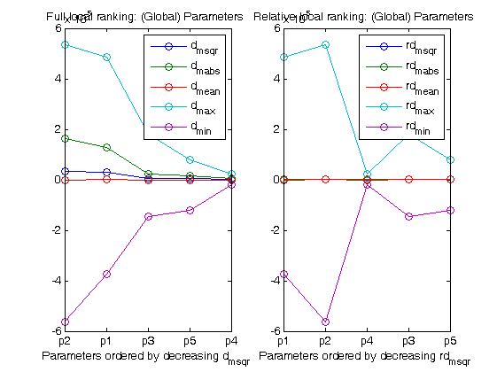 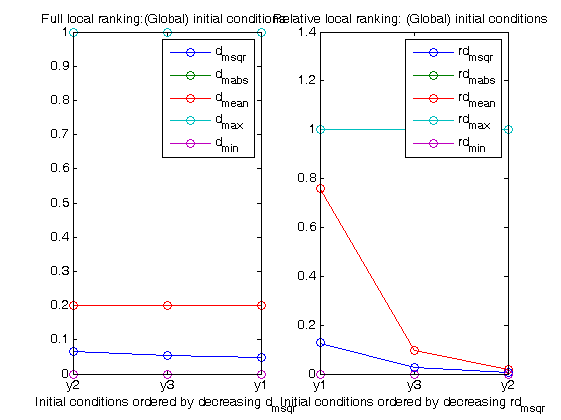 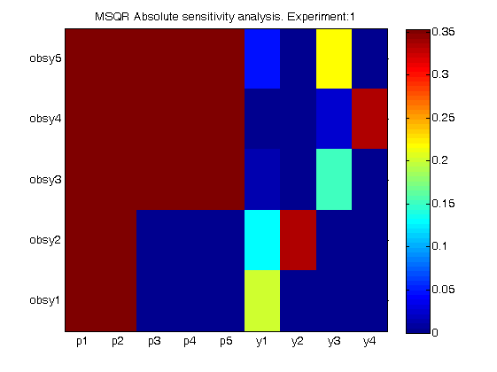 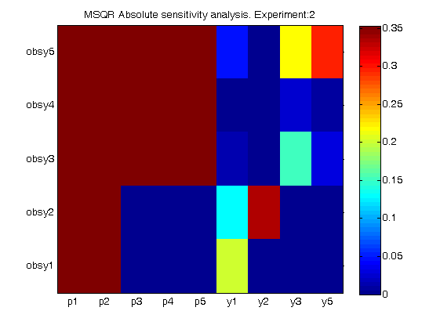 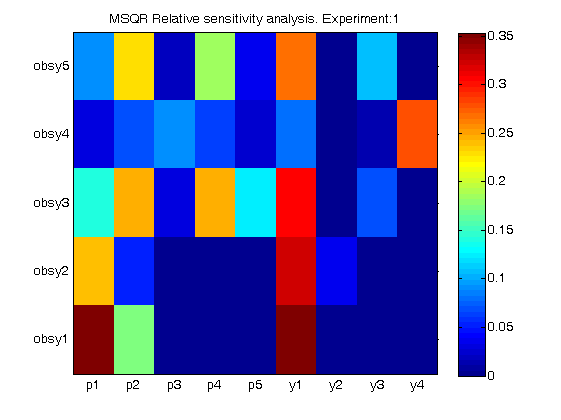